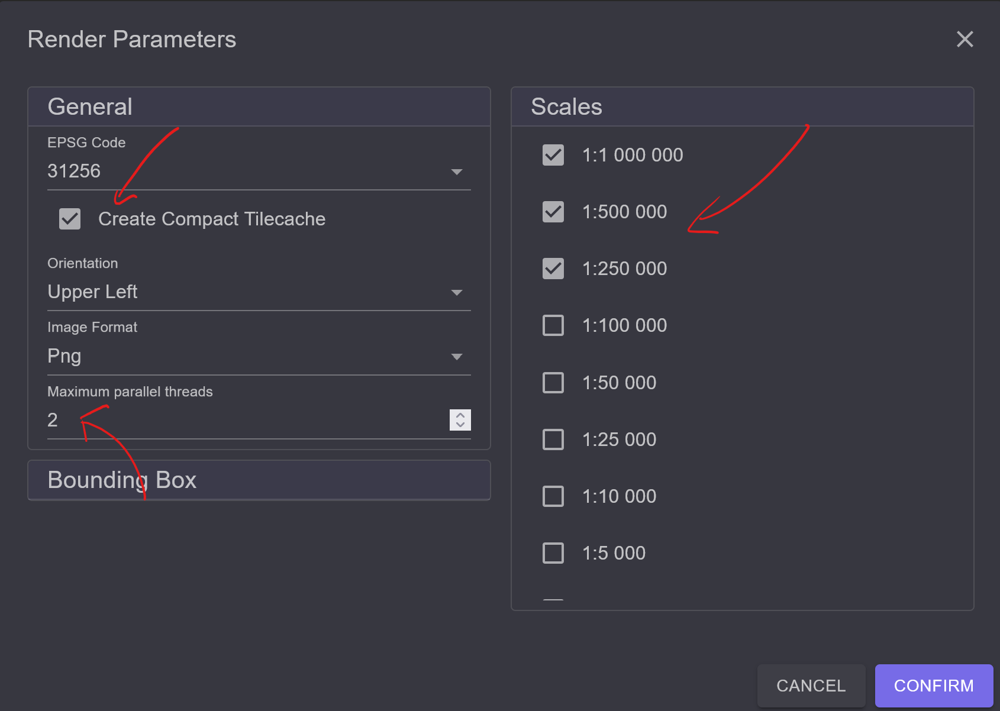

Berechnung eines TileCaches (Ortsplan)¶
In diesem Beispiel wird gezeigt, wie aus einem bestehenden gView Server Dienst ein TileCache gerechnet werden kann. Dieser kann über die WMTS Schnittstelle in unterschiedlichen Anwendungen eingebunden werden. Durch das Vorprozessieren der Kacheln erhöht sich die Performance des Dienstes. Außerdem vermindert sich die Serverlast.
Ein TileCache besteht am Ende nur noch aus einzelnen (Kachel) Bildern. Diese können auch als Compact TileCache Kacheln zusammengefasst werden, wodurch die Anzahl der vorgehaltenen Einzelbilder reduziert werden kann (einfacher zu kopieren, weniger Speicherplatz).
Ein gView TileCache bietet unterschiedliche Styles an. Die Kacheln können über Filter on-the-fly beispielsweise auch in Schwarz-Weiß angezeigt werden.
MapService Metadaten¶
Um einen Dienst als TileCache verwenden zu können, müssen im ersten Schritt die Metadaten
des Dienstes angepasst werden. Dazu muss man sich über die gView.Server Web-Oberfläche
mit Manage (Sidebar) als Administrator anmelden.
Über die Eigenschaften des Dienstes kommt man zu den Metadaten des Dienstes:
Im Metadaten Dialog wechselt man zuerst in den Bereich Tile Service Properties:

Hier können die Eigenschaften des TileCache als YAML-Datei definiert werden. Die Änderungen für den Dienst könnten etwa so aussehen:
use: true
scales:
- 1000000
- 500000
- 250000
- 100000
- 50000
- 25000
- 10000
- 5000
- 2500
- 1000
- 500
epsgCodes:
- 31256
extents:
31256:
minX: -226900
minY: 163300
maxX: 0
maxY: 315500
originUpperLeft:
31256:
x: -5622500
y: 5001000
originLowerLeft:
31256:
x: -226900
y: 163300
tileWidth: 512
tileHeight: 512
useUpperLeft: true
useLowerLeft: false
cacheUpperLeftTiles: true
cacheLowerLeftTiles: false
supportPng: true
supportJpg: false
dpi: 95.9998080000121
Bemerkung
Wichtig ist, dass use auf true gesetzt wird, damit der Dienst später auch die TileCache
Schnittstellen anbietet.
Navigiert man über die Sidebar/Browse um Dienst und klickt diesen an, sollte WMTS als
Schnittstelle angeboten werden:

Auch die Capabilities sollten ein Ergebnis liefern (klick auf den Link):

Bemerkung
Es werden zwar die WMTS Capabilities angezeigt, allerdings ohne einzelnen Maßstabsebenen. Der Grund ist, dass bisher noch keine Kacheln berechnet wurden.
Kacheln berechnen¶
Zum Berechnen der Kacheln muss in die gView.DataExplorer App gewechselt werden. Dort gibt es
unter Tools ein Werkzeug, zum Berechnen der Kacheln (TileCache.Render):
Startet man das Werkzeug, muss zuerst die Url zum Server angegeben werden. Ist der Dienst geschützt,
muss noch eventuell ein Client und ein Secret angegeben werden.
Den entsprechenden Dienst aus der Liste auswählen und den Dialog mit Ok bestätigen:

Wird der Dienst als WMTS Dienst erkennt, erscheint ein Dialog mit den TileCache Möglichkeiten des Dienstes. Hier kann eingestellt wie der TileCache berechnet werden soll.
Es wird empfohlen, einen
Compact Tile Cache zu rechnen, da hier weniger Files erzeugt werden. Tilecaches, die aus den
einzelnen Kachel-Bildern bestehen, benötigen viel Speicherplatz und sind schwer zu kopieren.
Damit die Berechnung schneller funktioniert, können Anzahl der parallelen Threads angegeben werden. Die Berechnung erfolgt grundsätzlich am gView.Server. Die Zahl, die hier angegeben wird, steuert, wie viele Render Commandos gleichzeitig zum Server geschickt werden.
Über die Scales Liste kann gesteuert werden, welche Maßstäbe gerendert werden sollten.
Bestätigt man den Dialog mit Confirm wird eine Kommandozeile angezeigt, die man mit Start
ausführen kann. Die Ausgabe sieht in etwa so aus:

Bemerkung
Das Ausführen über den gView.DataExplorer kann auch über das Kommandozeilen Werkzeug erfolgen, siehe gView Kommandozeilenwerkzeuge (gView.Cmd RenderTile). Da TileCaches sehr lange zum Berechnen brauchen, wird empfohlen produktiv die Kommandozeile zu verwenden. Ansonsten muss garantiert werden, dass der gView.DataExplorer während der gesamten Berechnung geöffnet bleibt.
Der hier beschriebene Weg kann allerdings dazu verwendet werden, um die Übergabeparameter an das Kommandozeilen Tool über deine graphische Oberfläche zu erhalten. Poppt das Fenster mit der Kommandozeilenaufruf auf, kann dieser Einfach kopiert und am Server ausgeführt werden.
Wechselt man der Berechnung wieder zum gView.Server und zu den WMTS Capabilities des Dienstes sollte jetzt auch die berechneten Maßstabsebenen angezeigt werden.
Bemerkung
Es werden nur die Maßstabsebenen angezeigt, für die im TileCache Verzeichnis am Server
(siehe file _config/mapserver.json) für den entsprechenden Dienst auch ein Verzeichnis
angelegt wurde:

Möchte man, das gewisse Maßsebenen on the fly berechnet werden sollten, kann man das
lösen, indem man das entsprechende Verzeichnis (Maßstabszahl) manuell anlegt. Findet der
gView.Server später keine Kacheln im Verzeichnis, werden die Kacheln immer on the fly
erstellt und ausgeliefert.
Achtung: Das sollte nur bei performanten Dienst gemacht werden. Und nur wenn eine Berechnung der entsprechenden Maßstabsebene nicht möglich ist.